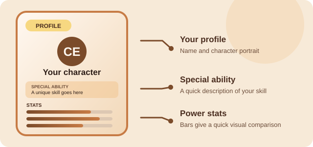
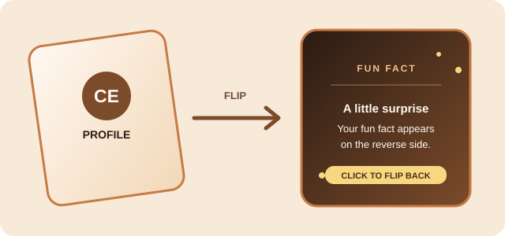
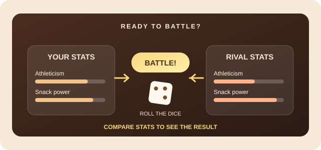

Visual User Guide
Trading Card Tutorial
Follow these steps to explore your card and start a battle. The illustrations point out the key details and controls at each step.
How to use the card
-
Explore your card
The front of the card shows the profile, special ability, and stats. Move your pointer over the card or click it to reveal the fun fact on the back.

Step 1: Find your profile and stats. -
Read the fun fact
When the card flips, read the information on its back. Click the card again or move your pointer away to return to the front.

Step 2: Turn the card over to see its fun fact. -
Start a battle
Select the Battle button below the card. The dice roll reveals a rival’s stats and shows the battle result.

Step 3: Roll the dice and compare stats.